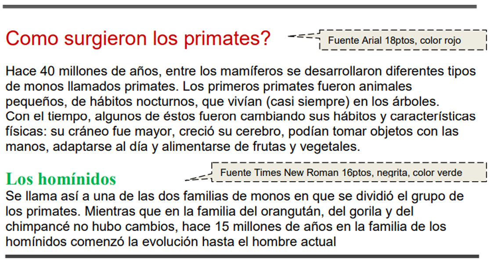
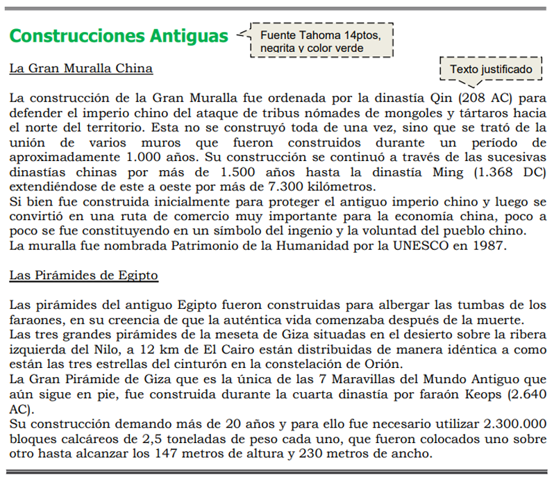

Uso de la herramienta ofimática Microsoft Word para el procesamiento de textos
Descripción
Como el resto de aplicativos productivos, los procesadores texto no se han quedado atrás y han avanzado en sus herramientas para optimizar cada vez más la generación de documentos de manera práctica automatizando tareas, generando documentos bien hechos y con las posibilidades del trabajo colaborativo y distribución de la información. Es fundamental asumir este reto formativo con un gran compromiso personal y profesional, pues el programa brinda herramientas para aplicarlas en las labores diarias para mejorar así con el tiempo y las buenas prácticas el desempeño y las posibilidades productivas de las empresas.
Una de las principales ventajas de utilizar Word es que es un programa que suele estar presente en todos los ordenadores y también es bastante simple de utilizar. El usuario simplemente escribe su texto,y luego elige un tamaño y formato de letra específica. También puede resaltar partes del texto en negrita, cursiva y subrayar.
- Otro de los beneficios de utilizar Word es que permite insertar imágenes, fotos y todo tipo de gráficos que permitan complementar la información del texto, por ejemplo se pueden crear gráficos de torta o gráficos de barra para demostrar estadísticas y porcentajes de manera clara y fácil de interpretar.
- Una de las herramientas de Word que lo vuelven un programa súper provechoso es el corrector ortográfico. Dicha herramienta le permite ver al usuario si cometió algún error de tipeo, de gramática o de sintaxis, ya que automáticamente se resaltan en color rojo o azul las palabras o sentencias que contengan errores.
Taller 1
Taller práctico.
Primeros pasos en Microsoft Word.
Desarrolle las acciones que propone el componente formativo y realice capturas de pantalla de los siguientes procesos:
● Cinta de opciones.
● Insertar fecha en el documento.
● Insertar tabla.
● Herramientas contextuales.
● Contraer la cinta de opciones.
● Comandos con teclado.
● Vista Backstage.
● Creación de PDF desde la vista Backstage.
● Personalizar barra de herramientas de acceso rápido.
● Personalizar cinta de opciones.
● Barra lateral de faceta izquierda.
● Iniciar sesión.
Al finalizar guarde el documento con las capturas de pantalla en formato Word de acuerdo a lo aprendido.
El documento debe ser enviado al correo del instructor o con indicaciones en los medios que se dispongan.
Taller 2
Teniendo en cuenta la siguiente imagen sobre: "Primates" realice lo siguiente:

a) Aplicar estilo cursivo al primer párrafo ("Hace...") y subrayado al segundo ("Con...").
b) Modificar el tipo de fuente para el segundo párrafo siendo Bookman Old Style la que se deberá definir.
c) Modificar el tamaño de la fuente para el tercer párrafo ("Se...") siendo 11ptos el que se deberá definir.
d) Dejar una línea en blanco entre los títulos y los párrafos y entre los párrafos del documento.
e) Colocar el tema al documento (colores y fuentes) de su preferencia.
f) Agregue una imagen relacionada con los textos.
El documento debe ser enviado al correo del instructor o con indicaciones en los medios que se dispongan.
Taller 3
Teniendo en cuenta la siguiente imagen sobre: "Muralla-Pirámide" realice lo siguiente:

a. Especificar tamaño de papel A4 con márgenes izquierdo de 4cm y el resto de 2cm.
b. Aplicar sangría de 1ra línea en 2cm y definir interlineado en 1,5 líneas para cada párrafo del documento, excepto los títulos y subtítulos.
c. Cambiar a mayúsculas el título principal del documento y centrarse.
d. Cambiar el orden de la información, ahora el texto sobre la Gran Muralla China debe quedar al final del documento.
e. Copiar el primer párrafo de cada tema (incluyendo el subtítulo del mismo) en un nuevo documento de Word, el que se deberá guardar con el nombre Partes.doc. Dicho texto deberá poseer:
a. Sombreado estilo 15% y color verde lima para los párrafos
b. Sombreado estilo 20% y color turquesa para los subtítulos
f. En el 1er párrafo se define Letra capital de 2 líneas y distancia desde el texto de 0.5cm.
g. Insertar una nota al pie (final de página) al final del título principal de este documento con el texto “Datos extraídos de Internet”.
h. Colocar color de página azul claro. i. Guardar las modificaciones realizadas en todos los documentos.
El documento debe ser enviado al correo del instructor o con indicaciones en los medios que se dispongan, para su respectiva calificación.
Rubrica de evaluacion
| Criterio | Excelente (5 pts) | Bueno (4 pts) | Aceptable (3 pts) | Deficiente (1-2 pts) | Puntaje Máx. |
|---|---|---|---|---|---|
| Capturas de pantalla | Incluye todas las capturas solicitadas, bien organizadas y legibles. | Incluye la mayoría de las capturas, con buena presentación. | Incluye capturas incompletas o con desorden. | Faltan varias capturas o no son claras. | 20 |
| Aplicación de funciones de Word | Usa correctamente todas las funciones solicitadas. | Usa la mayoría de las funciones, con pequeños errores. | Aplica pocas funciones correctamente. | No aplica las funciones solicitadas. | 20 |
| Presentación del documento | Documento con formato profesional: portada, títulos, numeración y orden. | Documento organizado, con formato básico correcto. | Documento con formato limitado y poco organizado. | Documento desordenado, sin formato claro. | 15 |
| Claridad de evidencias | Capturas y explicaciones claras, fáciles de comprender. | Capturas claras pero con poca explicación. | Algunas capturas poco legibles o sin explicación. | Capturas confusas, no se entiende la evidencia. | 15 |
| Entrega | Entregado en formato Word (.docx) y en el medio indicado. | Entregado en Word, pero con retraso o errores menores. | Entregado en formato distinto al solicitado. | No se entrega en el medio/formato solicitado. | 10 |
| Uso de atajos y personalización | Evidencia de uso y personalización completa, mostrando dominio. | Evidencia de personalización parcial y algunos atajos. | Poca evidencia de personalización y uso de atajos. | No hay evidencia de personalización ni atajos. | 20 |
Escala de valoración
90 – 100 pts → Excelente dominio.
80 – 89 pts → Bueno.
70 – 79 pts → Aceptable.
Menos de 70 pts → Requiere mejorar.